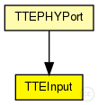
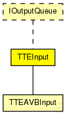

This documentation is released under the Creative Commons license
This documentation is released under the Creative Commons licenseModule for incoming traffic from MAC layer. The traffic is checked for critical traffic ID and then forwarded either as best-effort traffic to the upper layer or when critical traffic to the CTC module (via sendDirect).
See also: EtherLLC, IMacRelayUnit, IOutputQueue
Author: Till Steinbach
The following diagram shows usage relationships between types. Unresolved types are missing from the diagram. Click here to see the full picture.
The following diagram shows inheritance relationships for this type. Unresolved types are missing from the diagram. Click here to see the full picture.
| Name | Type | Description |
|---|---|---|
| TTEPHYPort | compound module |
The TTEPHYPort is a compund module that contains the TTEOutput, TTEInput and MAC (EtherMACFullDuplex) It represents a physical port for a TTEthernet device (Switch or Host) |
| Name | Type | Default value | Description |
|---|---|---|---|
| promiscuous | bool | false |
if true, all packets are received, otherwise only the ones with matching destination MAC address (This does not affect CT-Frames) |
| ct_marker | int | 0 |
Critical traffic marker of the buffer |
| ct_mask | int | 0 |
Critical traffic mask of the buffer |
| incomings | string | "" |
Comma seperated list of ctc modules the input uses |
| Name | Value | Description |
|---|---|---|
| display | i=block/dispatch |
| Name | Direction | Size | Description |
|---|---|---|---|
| in | input |
Input from the lower layer (MAC layer) |
|
| out | output |
Output for best-effort frames to the upper layer (EtherLLC or IMacRelayUnit) |
| Name | Title | Source | Record | Unit | Interpolation Mode |
|---|---|---|---|---|---|
| ctDropped | Unconfigured CT dropped | sum |
// // Module for incoming traffic from MAC layer. The traffic is checked for // critical traffic ID and then forwarded either as best-effort traffic to // the upper layer or when critical traffic to the CTC module (via sendDirect). // // @see EtherLLC, IMacRelayUnit, IOutputQueue // // @author Till Steinbach simple TTEInput like IOutputQueue { parameters: @display("i=block/dispatch"); //Statistic of the amount of packets that were dropped due to no configured buffer/ctc @statistic[ctDropped](title="Unconfigured CT dropped"; record=sum); // if true, all packets are received, otherwise only the ones with matching destination MAC address (This does not affect CT-Frames) bool promiscuous = default(false); //Critical traffic marker of the buffer int ct_marker = default(0); //Critical traffic mask of the buffer int ct_mask = default(0); //Comma seperated list of ctc modules the input uses string incomings = default(""); gates: //Input from the lower layer (MAC layer) input in @labels(EtherFrame); //Output for best-effort frames to the upper layer (EtherLLC or IMacRelayUnit) output out @labels(EtherFrame); }
This documentation is released under the Creative Commons license